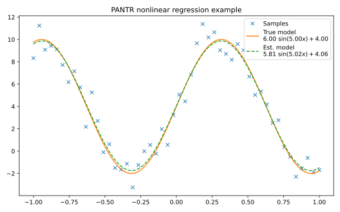

Nonlinear regression#
In this example, we use the PANTR solver to fit a nonlinear model to some noisy data. The model is given by \(y = p_1\ \sin(p_2 x) + p_3\), and the goal is to estimate the parameters \(p_1\), \(p_2\) and \(p_3\) by minimizing the squared error between the model and the data.
{kind=link}
1# %% alpaqa nonlinear regression example
2
3import alpaqa as pa
4import alpaqa.casadi_loader as cl
5import casadi as cs
6import numpy as np
7from pprint import pprint
8
9# %% Build the problem (CasADi code, independent of alpaqa)
10
11# Symbolic model parameters
12p = cs.MX.sym("params", 3)
13# Symbolic data vectors
14N_data = 50
15data_x = cs.MX.sym("data_x", N_data)
16data_y = cs.MX.sym("data_y", N_data)
17data = cs.horzcat(data_x, data_y)
18
19# Objective function is the squared error between the model and the data
20x, y = cs.MX.sym("x"), cs.MX.sym("y")
21model = cs.Function("model", [x, p], [p[0] * cs.sin(p[1] * x) + p[2]])
22sample_error = cs.Function("err", [x, y, p], [y - model(x, p)])
23sum_sq_error = cs.sumsqr(sample_error.map(N_data)(data_x.T, data_y.T, p))
24
25# %% Generate and compile C-code for the objective and constraints using alpaqa
26
27# Compile and load the problem (without general constraints)
28problem = (
29 pa.minimize(sum_sq_error, p)
30 .with_param(cs.vec(data))
31).compile(second_order="psi_prod", sym=cs.SX.sym)
32# Optionally, add constraints on the parameters
33problem.C.lowerbound[1] = 3
34problem.C.upperbound[1] = 7
35
36# %% Generate some data
37
38true_params = [6, 5, 4]
39true_model = np.vectorize(lambda x: model(x, true_params))
40rng = np.random.default_rng(12345)
41data_x = np.linspace(-1, +1, N_data, endpoint=True)
42data_y = true_model(data_x) + rng.standard_normal(N_data)
43
44# Add data to the problem
45problem.param = np.concatenate((data_x, data_y))
46
47# %% Solve the problem using alpaqa's PANTR solver
48
49solver = pa.PANTRSolver({"print_interval": 1})
50# Add evaluation counters to the problem
51cnt = pa.problem_with_counters(problem)
52sol_params, stats = solver(cnt.problem, {"tolerance": 1e-10})
53
54# %% Print the results
55
56print(f"\nSolution: {sol_params}")
57print(stats["status"])
58pprint(stats)
59print("\nEvaluations:")
60print(cnt.evaluations)
61
62# %% Plot the results
63
64import matplotlib.pyplot as plt
65
66model_str = r"${:.2f}\ \sin({:.2f} x) + {:.2f}$"
67sol_model = np.vectorize(lambda x: model(x, sol_params))
68plt.figure(figsize=(8, 5))
69x_fine = np.linspace(-1, 1, 256)
70plt.plot(data_x, data_y, "x", label="Samples")
71plt.plot(x_fine, true_model(x_fine),
72 label="True model\n" + model_str.format(*true_params))
73plt.plot(x_fine, sol_model(x_fine), "--",
74 label="Est. model\n" + model_str.format(*sol_params))
75plt.legend(loc='upper right')
76plt.title("PANTR nonlinear regression example")
77plt.tight_layout()
78plt.show()
79
80# %%